Mulitvariate auto-regressive modeling¶
Multivariate auto-regressive modeling uses a simple
This example is based on Ding, Chen and Bressler 2006 [Ding2006].
We start by importing the required libraries:
import numpy as np
import matplotlib.pyplot as plt
From nitime, we import the algorithms and the utils:
import nitime.algorithms as alg
import nitime.utils as utils
Setting the random seed assures that we always get the same ‘random’ answer:
np.random.seed(1981)
We will generate an AR(2) model, with the following coefficients (taken from [Ding2006], eq. 55):
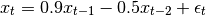
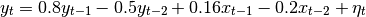
Or more succinctly, if we define:
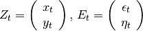
then:
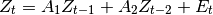
where:
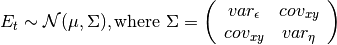
We now build the two  matrices with the values indicated above:
matrices with the values indicated above:
a1 = np.array([[0.9, 0],
[0.16, 0.8]])
a2 = np.array([[-0.5, 0],
[-0.2, -0.5]])
For implementation reasons, we rewrite the equation (eqn_ar) as follows:
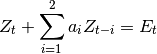
where: 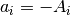:
am = np.array([-a1, -a2])
The variances and covariance of the processes are known (provided as part of the example in [Ding2006], after eq. 55):
x_var = 1
y_var = 0.7
xy_cov = 0.4
cov = np.array([[x_var, xy_cov],
[xy_cov, y_var]])
We can calculate the spectral matrix analytically, based on the known coefficients, for 1024 frequency bins:
n_freqs = 1024
w, Hw = alg.transfer_function_xy(am, n_freqs=n_freqs)
Sw_true = alg.spectral_matrix_xy(Hw, cov)
Next, we will generate 500 example sets of 100 points of these processes, to analyze:
#Number of realizations of the process
N = 500
#Length of each realization:
L = 1024
order = am.shape[0]
n_lags = order + 1
n_process = am.shape[-1]
z = np.empty((N, n_process, L))
nz = np.empty((N, n_process, L))
for i in range(N):
z[i], nz[i] = utils.generate_mar(am, cov, L)
We can estimate the 2nd order AR coefficients, by averaging together N estimates of auto-covariance at lags k=0,1,2
Each 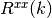 has the shape (2,2), where:
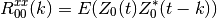
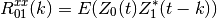
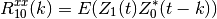
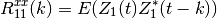
Where  is the expected value and 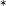 marks the conjugate transpose. Thus, only 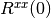 is symmetric.
is the expected value and 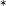 marks the conjugate transpose. Thus, only 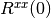 is symmetric.
This is calculated by using the function utils.autocov_vector(). Notice
that the estimation is done for an assumed known process order. In practice, if
the order of the process is unknown, we will have to use some criterion in
order to choose an appropriate order, given the data.
Rxx = np.empty((N, n_process, n_process, n_lags))
for i in range(N):
Rxx[i] = utils.autocov_vector(z[i], nlags=n_lags)
Rxx = Rxx.mean(axis=0)
R0 = Rxx[..., 0]
Rm = Rxx[..., 1:]
Rxx = Rxx.transpose(2, 0, 1)
We use the Levinson-Whittle(-Wiggins) and Robinson algorithm, as described in [Morf1978] , in order to estimate the MAR coefficients and the covariance matrix:
a, ecov = alg.lwr_recursion(Rxx)
Next, we use the calculated coefficients and covariance matrix, in order to calculate Granger ‘causality’:
w, f_x2y, f_y2x, f_xy, Sw = alg.granger_causality_xy(a,
ecov,
n_freqs=n_freqs)
This results in several different outputs, which we will proceed to plot.
First, we will plot the estimated spectrum. This will be compared to two other estimates of the spectrum. The first is the ‘true’ spectrum, calculated from the known coefficients that generated the data:
fig01 = plt.figure()
ax01 = fig01.add_subplot(1, 1, 1)
# This is the estimate:
Sxx_est = np.abs(Sw[0, 0])
Syy_est = np.abs(Sw[1, 1])
# This is the 'true' value, corrected for one-sided spectral density functions
Sxx_true = Sw_true[0, 0].real
Syy_true = Sw_true[1, 1].real
The other is an estimate based on a multi-taper spectral estimate from the empirical signals:
c_x = np.empty((L, w.shape[0]))
c_y = np.empty((L, w.shape[0]))
for i in range(N):
frex, c_x[i], nu = alg.multi_taper_psd(z[i][0])
frex, c_y[i], nu = alg.multi_taper_psd(z[i][1])
We plot these on the same axes, for a direct comparison:
ax01.plot(w, Sxx_true, 'b', label='true Sxx(w)')
ax01.plot(w, Sxx_est, 'b--', label='estimated Sxx(w)')
ax01.plot(w, Syy_true, 'g', label='true Syy(w)')
ax01.plot(w, Syy_est, 'g--', label='estimated Syy(w)')
ax01.plot(w, np.mean(c_x, 0), 'r', label='Sxx(w) - MT PSD')
ax01.plot(w, np.mean(c_y, 0), 'r--', label='Syy(w) - MT PSD')
ax01.legend()
{kind=link}
Next, we plot the granger causalities. There are three GCs. One for each direction of causality between the two processes (X => Y and Y => X). In addition, there is the instanteaneous causality between the processes:
fig02 = plt.figure()
ax02 = fig02.add_subplot(1, 1, 1)
# x causes y plot
ax02.plot(w, f_x2y, label='X => Y')
# y causes x plot
ax02.plot(w, f_y2x, label='Y => X')
# instantaneous causality
ax02.plot(w, f_xy, label='X:Y')
ax02.legend()
{kind=link}
Note that these results make intuitive sense, when you look at the equations governing the mutual influences. X is entirely influenced by X (no effects of Y on X in eq1) and there is some influence of X on Y (eq2), resulting in this pattern.
Finally, we calculate the total causality, which is the sum of all the above causalities. We compare this to the interdependence between the processes. This is the measure of total dependence and is closely akin to the coherence between the processes. We also compare to the empirically calculated coherence:
fig03 = plt.figure()
ax03 = fig03.add_subplot(1, 1, 1)
# total causality
ax03.plot(w, f_xy + f_x2y + f_y2x, label='Total causality')
#Interdepence:
f_id = alg.interdependence_xy(Sw)
ax03.plot(w, f_id, label='Interdependence')
coh = np.empty((N, 33))
for i in range(N):
frex, this_coh = alg.coherence(z[i])
coh[i] = this_coh[0, 1]
ax03.plot(frex, np.mean(coh, axis=0), label='Coherence')
ax03.legend()
{kind=link}
Finally, we call plt.show(), in order to show the figures:
plt.show()
| [Ding2006] | (1, 2, 3) M. Ding, Y. Chen and S.L. Bressler (2006) Granger causality: basic theory and application to neuroscience. In Handbook of Time Series Analysis, ed. B. Schelter, M. Winterhalder, and J. Timmer, Wiley-VCH Verlage, 2006: 451-474 |
| [Morf1978] | M. Morf, A. Vieira and T. Kailath (1978) Covariance Characterization by Partial Autocorrelation Matrices. The Annals of Statistics, 6: 643-648 |
Example source code
You can download the full source code of this example.
This same script is also included in the Nitime source distribution under the
doc/examples/ directory.